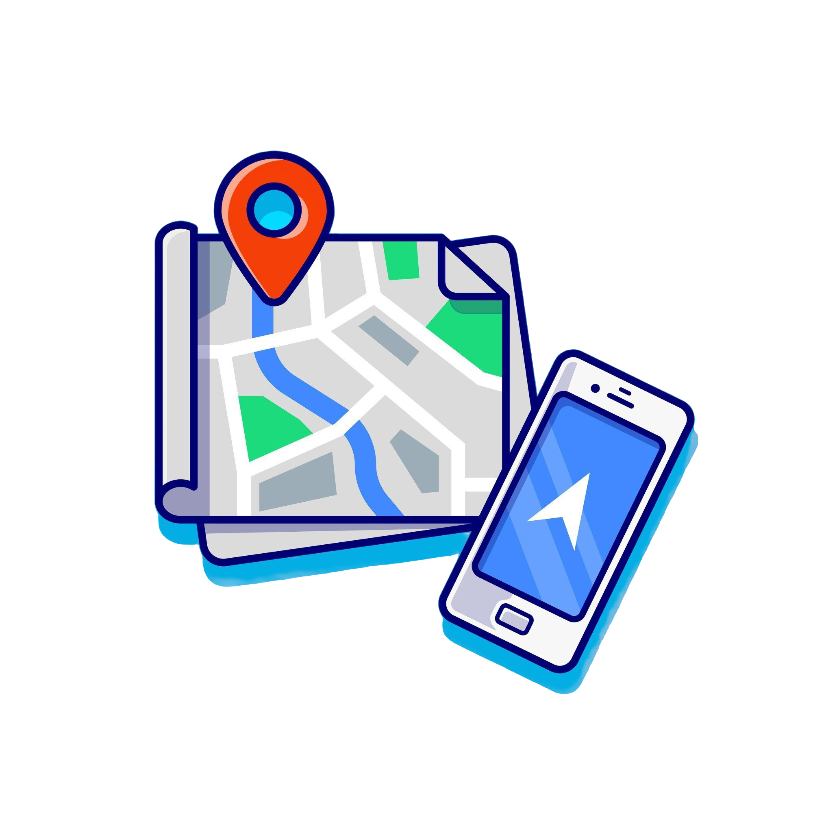

Detail Workshop

19 Januari 2025

13.00 - 15.00 WIB

Bandung Convention Center (BCC)
Workshop desain UI/UX adalah sebuah sesi pelatihan intensif yang dirancang untuk memberikan pemahaman mendalam tentang cara merancang antarmuka pengguna (UI) dan pengalaman pengguna (UX) yang menarik, intuitif, dan efektif.
Dian Sastrowardoyo
Materi ini akan mengenalkan peserta pada konsep dasar desain antarmuka pengguna (UI) dan pengalaman pengguna (UX).
Materi ini akan membahas langkah-langkah yang umumnya dilakukan dalam proses desain UI/UX, mulai dari riset pengguna, pembuatan wireframe, hingga prototipe.
Peserta akan diperkenalkan dengan berbagai software desain yang populer digunakan oleh para desainer UI/UX, seperti Figma, Adobe XD, Sketch, atau lainnya.
Materi ini membahas berbagai praktik terbaik dalam desain UI/UX yang telah terbukti efektif. Peserta juga diajarkan cara mendesain yang konsisten.